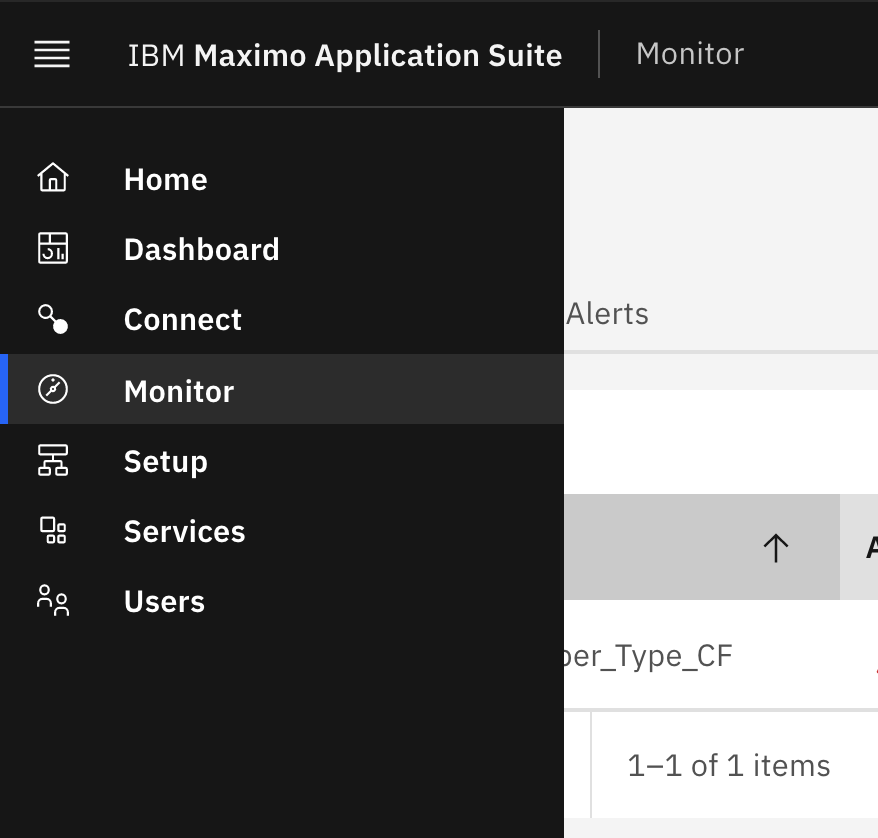
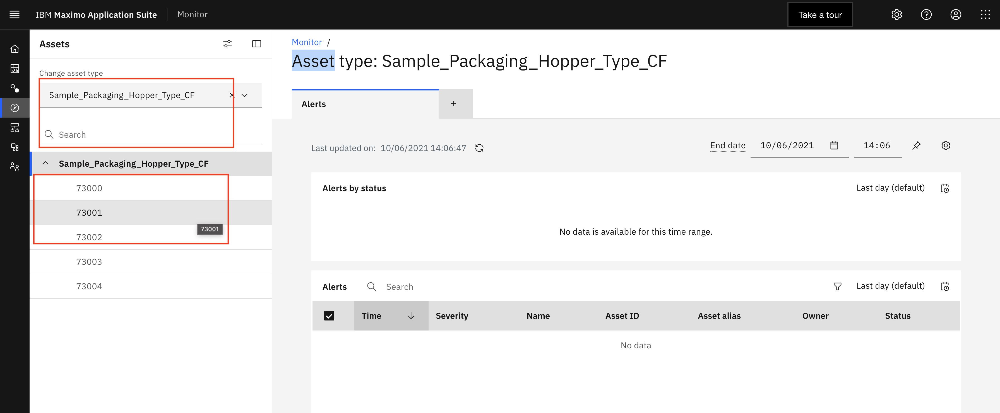
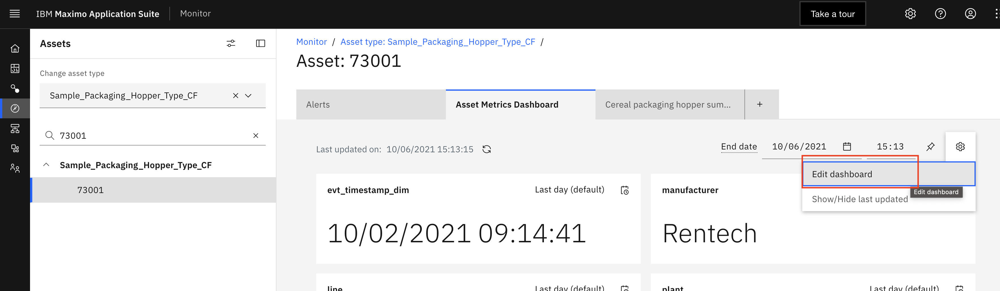
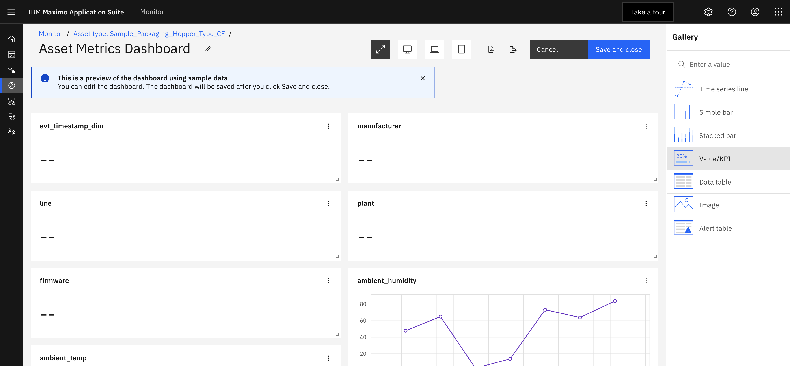
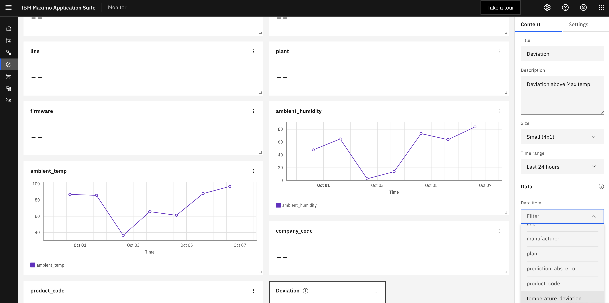
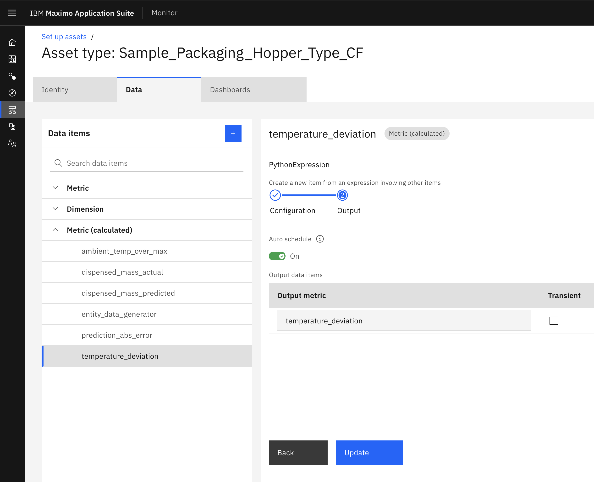
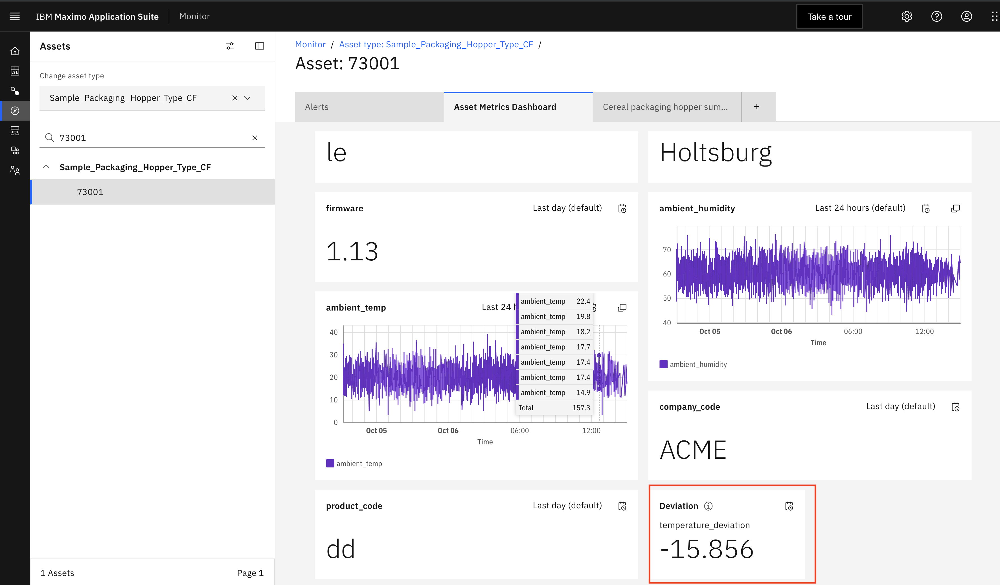
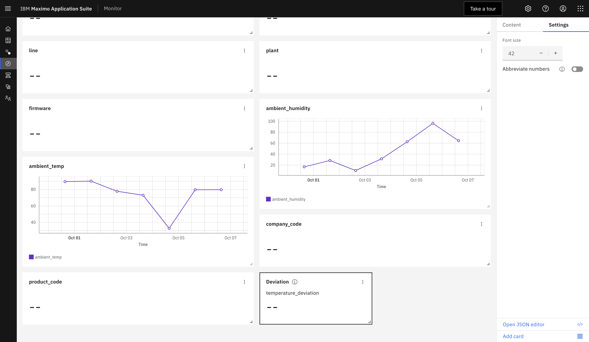
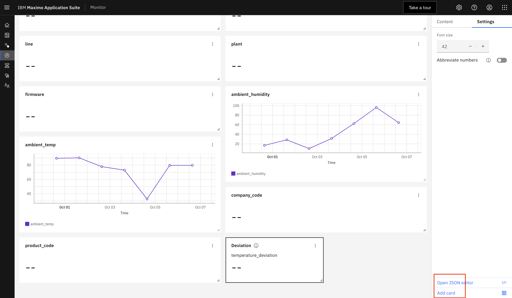
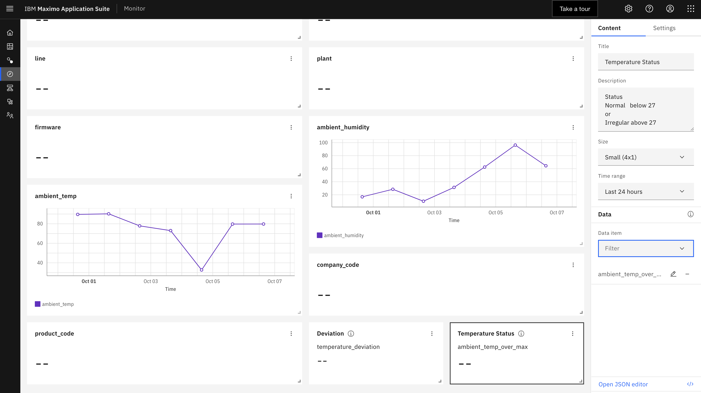

Objectives
In this Exercise using Monitor you will learn how to :
- Add a value card to your asset dashboard for the new calculated metrics
temperature_deviationandambient_temp_over_max_status
Now that you know when the Packaging Hopper asset is a above the ambient_temp_over_max You can display the status
value of the new calculated metric named ambient_temp_over_max_status in a value card in the asset dashboard. By also
adding temperature_deviation in a value card to the asset dashboard, the Remote operational support will know by how
much each Hooper is operating outside the required operating ranges.
Before you begin:
-
This exercise requires that you have completed the pre-requisites required for all Exercises.
-
This exercise requires that you have completed the previous exercise.
Create Value Card
Value cards allows you to display a metric or multiple metrics in a card. It is a good way to show the status of an asset. You are also able to set alert thresholds within the JSON to have different icons appear on the card to indicate a normal or irregular status.
-
In Monitor, select
Monitortab,
 -
Open your Asset Dashboard. Search
Device typesforSample_Packaging_Hopper_Type_yourinitials. Click on yourDevice Type, Click on asset730001andAsset Metrics Dashboardwhich is an built in dashboard Monitor created for your asset metrics.
 -
Edit the asset dashboard that you will add the Value card to. Click on
gearicon. SelectEdit Dashboardand clickContinuebutton.
 -
Click on
valuecard fortemperature_deviation.
 -
Enter the values below for the
Valuecard.
 -
Scroll up and click the
Savebutton
 -
Scroll down on the
Asset Metrics Dashboardto see the new value Card.  -
You can further customize cards by editing their settings. Edit the dashboard again. Click on
Value Cardfor Deviation. Click onSettingsChange the font size to a smaller font.
 -
Add another Value card for the
ambient_temp_over_max_status, Scroll down and click onAdd Cardbutton and repeat the step 4 above.

Save your changes to the dashboard.
- You can also edit dashboard cards directly by modifying the JSON. Click on your value card. Click on
Edit Json

Some other important notes about the JSON:
- The id at the very top needs to be a unique name for this card. Use dashes instead of spaces.
- The size is self explanatory. This size is SMALLWIDE
- The type is the type of card such as VALUE, TIMESERIES, or IMAGE.
- unit is the unit of measurement belonging to your data item.
- precision refers to the number of decimal points to be seen.
See the full explanation of the JSON attributes for all card using the Monitor documention
- Click
Cancelto not save your changes.
Next Step
Congratulations! You have completed exercises 1 to 5 and have a good understanding how to analyze and display data using functions and dashboards with Monitor. In the next exercise you will create a custom function. Do the tutorial provided in the Maximo Asset Manager Documentation.